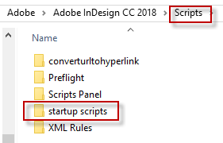

Start up folder for InDesign (InCopy) scripts
Startup scripts folder in InDesign CS3 – 4 is not created by default, so you have to create it manually. The scripts in this folder are executed every time when InDesign (InCopy) launches.
It can be created in two locations:
- inside the Scripts folder in your InDesign application folder.
- inside the Scripts folder in your user-preferences folder. Your user-preferences folder which is located here:
Mac OS: ~/Library/Preferences/Adobe InDesign/Version 5.0/Scripts
Windows XP: ~\Documents and Settings\user_name\Application Data\Adobe
\InDesign\Version 5.0\Scripts
where ~ is your system volume and user_name is your user name.
To quickly get there you can right click either Application or User folder in Scripts Panel and choose Reveal in Explorer (Finder).
Note: The name of the folder should be exactly Startup Scripts and it should be inside Scripts folder, for example:
C:\Program Files\Adobe\Adobe InDesign CS3\Scripts\Startup Scripts
In the recent versions of InDesign — e.g. CC 2018 — this folder is already created on installation.

To install a start-up script, copy it into this folder and restart InDesign (InCopy).
To uninstall it, just remove it from this folder and restart InDesign (InCopy).
Here's more information on installing scripts.